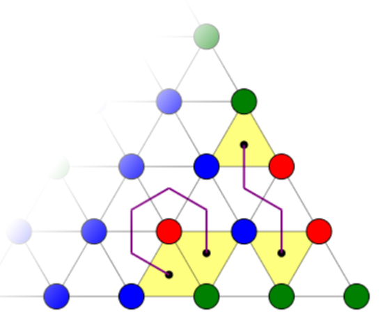
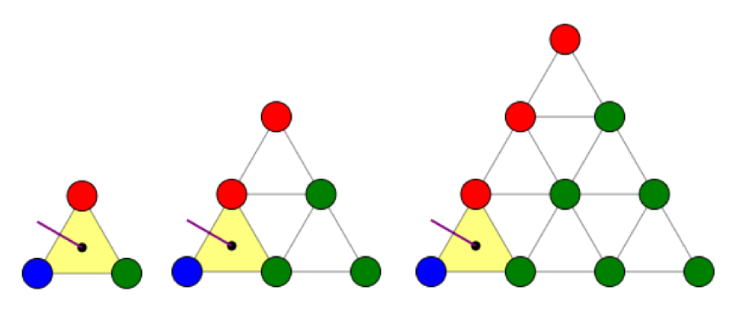

Purple lines indicate red-blue edges (Click on a vertex to change colour)
1D case : If a discrete function takes only the values 0 and 1, begins at the value 0 and ends at the value 1, then it must switch values an odd number of times. (wikipedia)
A triangulation is an assignment where :
By Sperner's Lemma, given any triangulation, there is always a smaller triangle with all three colours at its vertices (a rainbow triangle). Moreover, the number of such triangles is always odd.
Connecting the cells across the red-blue edges produces only simple paths and cycles. Paths that end within the
triangulation correspond to a rainbow triangle (shaded yellow).
From the 1D case it follows that only an
odd number of paths enter the triangle (from the top left side of the
triangulation).
Only an even number of paths may enter and leave the triangulation from the red-blue side. Number of paths entering and terminating within the triangle is still odd (odd - even = odd).
Paths may terminate within the triangulation but as they do not exit the triangulation, both the starting and ending nodes contribute to a rainbow triangle. Thus, such paths contribute an even number of rainbow triangles.
From the above 2 cases, we can conclude that the final number of RT's is odd + even = odd. Existence can be shown by induction from the n=2 case.
